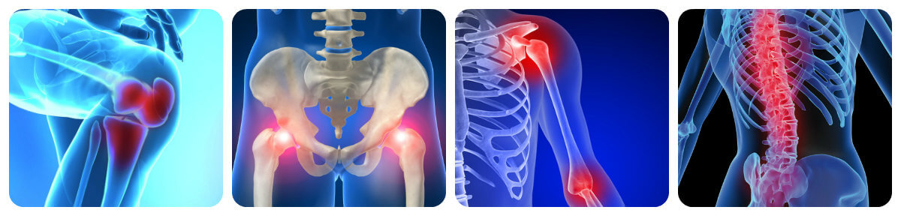

¡Remedio popular para el dolor articular ha ayudado a todo el mundo!
Con la edad el cuerpo humano se vuelve más débil y muchas personas no logran mantener la salud física por cuenta propia, ya que las articulaciones empiezan a causarles problemas desde temprana edad. Pero hoy día es posible deshacerse del dolor articular.
Sólo un especialista puede diagnosticar una u otra enfermedad, pero, independientemente del veredicto que su médico haya alcanzado, hay recomendaciones generales que son las mismas para todos. Para mantener sus huesos y articulaciones saludables Usted debe de:
- beber al menos 2 litros de agua al día
- hacer ejercicio cada día
- alimentarse correctamente
- caminar al aire libre usando zapatos cómodos
El dolor articular puede degenerar en una enfermedad grave. Para evitar esto hay que tratarlo, por lo tanto es necesario proporcionar a su cuerpo unos componentes esenciales.
La dosis diaria de estos fermentos para un adulto es de 10-15 gramos. Usted puede conseguirla de su dieta comiendo 0,5 kg de peces de aletas radiales (salmón, trucha, etc.). Si no puede hacer esto, los médicos recomiendan usar cremas y ungüentos como fuente de sustancias esenciales.
En 2020 la crema '' fue reconocida como la mejor para el tratamiento de las articulaciones. Incluye todos los componentes necesarios que penetran hasta el foco del dolor eliminándolo al instante. El alivio del dolor viene dado por lo siguiente:
- El extracto de hoja de Maytenus senegalensis. Tiene propiedades antiinflamatorias y antiartríticas, también ayuda a proteger la salud de los huesos.
- El extracto de flor de árnica. Restaura el sistema inmunológico y aumenta la fuerza general del cuerpo. Esto reduce la inflamación, la incomodidad y el dolor.
- El capsicum annuum o el pimiento. Enfría la piel, tonifica los vasos sanguíneos y hace que las articulaciones sean más móviles y tiene un efecto calmante, antibacteriano y antiinflamatorio, y activa el sistema inmune de la piel.
- El ácido de cera de abejas. Tiene un efecto de calentamiento que mejora la microcirculación en la piel y reduce la tensión muscular y la rigidez en general.
Es importante destacar que esta crema ha superado los ensayos clínicos y de hecho es absolutamente segura e hipoalergénica. De todos modos sólo puede adquirirse del fabricante, y eso tiene que ver con los altísimos sobreprecios de la cadena de farmacias con las que los fabricantes no están para nada satisfechos. ¡La medicina debería estar al alcance de todo el mundo!